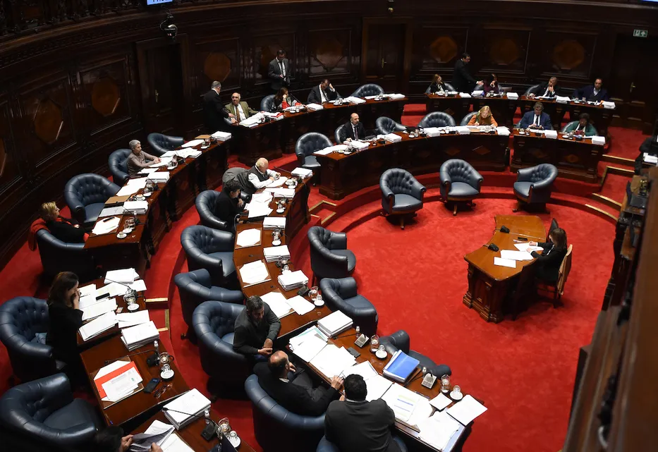

Projecto "Lenguaje Claro" en el territorio Uruguayo
La senadora del Frente Amplio Blanca Rodríguez presentó un proyecto de ley que aborda el “lenguaje claro”, aplicado a diferentes servicios estatales. En el proyecto, se define lenguaje claro como el estilo de escritura orientado a la transmisión de la información en forma clara, sencilla, efectiva y sin opacidad. “El lenguaje claro se caracteriza por organizar los mensajes y las estructuras de manera concreta y precisa, y por orientar el diseño hacia la comprensión por parte de las personas”, acota. En caso de ser aprobado, los organismos públicos deberán aplicar el lenguaje claro en todos sus trámites, servicios, contenidos y comunicaciones. Además de capacitar a los funcionarios, también deberán elaborar y publicar un informe anual detallando los avances de las medidas que busca llevar adelante el proyecto.